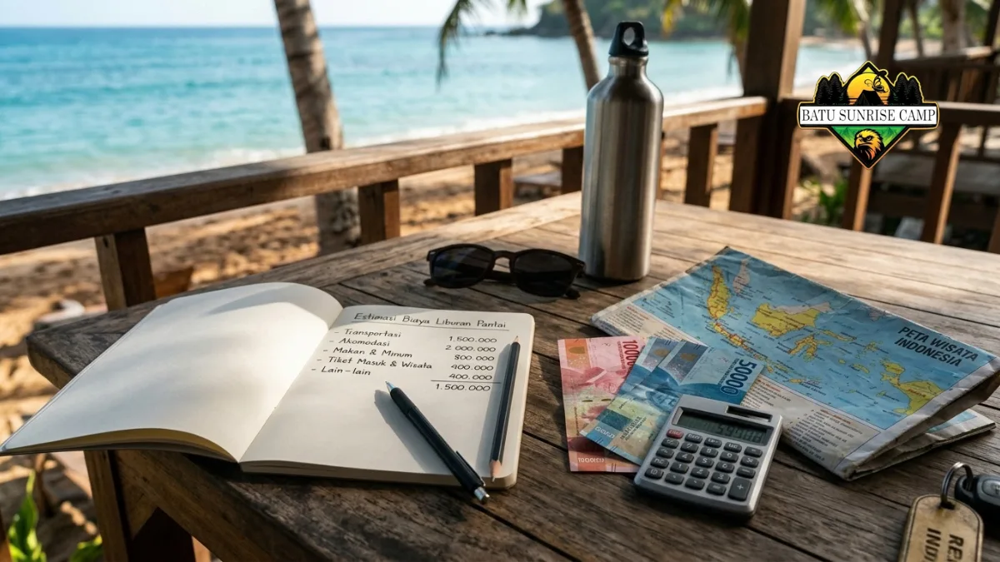

Perbedaan biaya antara glamping pantai dan camping konvensional terletak pada struktur pengeluaran yang berbeda.
Glamping pantai mengharuskan pengunjung membayar untuk akomodasi yang telah disediakan beserta layanan-layanan yang siap digunakan, sementara camping biasa memerlukan pengunjung untuk menanggung sendiri biaya pembelian peralatan dan pengelolaan logistik perjalanan.
- Glamping pantai menagih tarif akomodasi yang sudah mencakup tenda, kasur, dan sering kali makan.
- Camping biasa memiliki tarif lahan rendah, tetapi menambah biaya peralatan, makanan, dan transportasi barang.
- Selisih biaya paling besar terjadi pada rombongan kecil yang belum memiliki peralatan.
- Rombongan besar yang sudah memiliki peralatan biasanya paling hemat dengan camping biasa.
- Tarif aktual berbeda antar lokasi dan musim, sehingga konfirmasi ke pengelola tetap diperlukan.
Berapa saja komponen biaya glamping pantai?
Komponen biaya glamping pantai terdiri dari tarif akomodasi per malam, paket makan, aktivitas tambahan, tiket masuk kawasan, dan biaya transportasi menuju lokasi.
Tarif akomodasi merupakan komponen terbesar karena sudah mencakup tenda atau kabin, tempat tidur, listrik, dan kebersihan.
Banyak pengelola menjual paket yang menyertakan sarapan atau makan malam, sedangkan sebagian lain menagih terpisah.
Aktivitas tambahan, seperti api unggun, sewa kano, atau pemandu, biasanya dikenai biaya sendiri.
Tiket masuk kawasan wisata dan tarif parkir sering tidak termasuk dalam harga kamar. Pada musim liburan dan akhir pekan, tarif umumnya naik dan ketersediaan unit menurun.
Karena itu, wisatawan perlu meminta rincian tertulis tentang apa saja yang termasuk dan tidak termasuk dalam harga.
Berapa saja komponen biaya camping biasa?
Komponen biaya camping biasa meliputi tarif lahan atau tiket masuk, peralatan, bahan makanan dan bahan bakar masak, transportasi, serta perlengkapan keselamatan.
Tarif lahan kemah di pantai umumnya jauh lebih rendah daripada tarif kamar glamping, dan sebagian lokasi hanya menarik tiket masuk.
Pengeluaran terbesar sesungguhnya berasal dari perlengkapan: tenda, alas tidur, sleeping bag, kompor, lampu, dan wadah air. Peserta yang belum memilikinya harus membeli atau menyewa.
Makanan dan air juga perlu dihitung, karena pantai terpencil jarang memiliki warung yang buka lengkap.
Selain itu, transportasi barang menuntut kendaraan yang cukup besar, sehingga biaya bahan bakar atau sewa kendaraan ikut naik.
Perlengkapan keselamatan seperti lampu cadangan dan kotak P3K sering terlupa dalam perhitungan awal.
Apakah camping biasa selalu lebih murah daripada glamping pantai?
Camping biasa tidak selalu lebih murah. Rombongan kecil yang harus menyewa semua peralatan dapat mengeluarkan biaya mendekati tarif glamping, terutama untuk satu malam saja.
Suatu perbandingan yang objektif dan berkeadilan harus memperhitungkan keseluruhan biaya yang dibebankan kepada setiap individu, bukan sekadar tarif penggunaan lahan semata. Jika peserta sudah memiliki tenda dan perlengkapan, camping biasa jelas lebih hemat.
Namun, jika peralatan harus disewa dan makanan dibeli di lokasi, selisih dengan glamping pantai menyempit.
Glamping juga menghemat waktu dan tenaga, yang tidak selalu tercermin dalam angka. Rombongan keluarga yang membawa anak kecil sering memilih glamping karena mengurangi risiko tidur tidak nyenyak dan kebutuhan membawa barang berat.
Sebaliknya, kelompok besar yang berbagi satu set peralatan biasanya mendapat harga per orang yang paling rendah dari camping biasa.

Catatan anggaran liburan pantai dengan rincian biaya transportasi, akomodasi, dan makan lengkap dengan kalkulator, uang rupiah, dan peta wisata Indonesia.
Bagaimana tren harga dan pertumbuhan glamping memengaruhi anggaran 2026?
Pertumbuhan permintaan glamping membuat pilihan semakin banyak, tetapi tarif pada lokasi populer cenderung mengikuti permintaan musiman, sehingga pemesanan lebih awal biasanya menguntungkan.
Laporan Technavio yang terbit pada Maret 2026 memperkirakan pasar glamping dunia bertambah sekitar 3,21 miliar dolar AS antara 2025 dan 2030 dengan laju pertumbuhan tahunan majemuk sekitar 13 persen.
Angka ini menunjukkan bahwa pelaku usaha terus menambah unit dan konsep baru. Kompetisi antar pengelola dapat menghadirkan lebih banyak paket, tetapi tidak menjamin tarif turun, terutama pada musim liburan.
Wisatawan dapat memanfaatkan situasi ini dengan membandingkan beberapa lokasi, membaca ulasan terbaru, dan mencari paket hari kerja.
Perlu diingat bahwa angka riset pasar adalah proyeksi dan berbeda antar lembaga, sehingga tidak dapat dipakai untuk memperkirakan tarif satu lokasi tertentu.
Bagaimana cara menghitung anggaran perjalanan dengan tepat?
Hitung anggaran dengan menjumlahkan lima pos: akomodasi, makan, transportasi, aktivitas, dan dana cadangan, lalu bagi dengan jumlah peserta untuk mendapat biaya per orang.
Langkah pertama adalah menulis daftar pos biaya. Untuk glamping, minta rincian harga dari pengelola, termasuk apa yang sudah termasuk dalam paket.
Untuk camping biasa, tulis daftar peralatan yang harus dibeli atau disewa serta jumlah makanan yang dibutuhkan.
Langkah kedua adalah melibatkan pengalokasian dana darurat, yang umumnya merupakan porsi terbatas dari keseluruhan anggaran, guna mengantisipasi kondisi cuaca yang tidak menguntungkan, perubahan rencana waktu, atau keperluan yang tidak terduga.
Langkah ketiga adalah membagi total dengan jumlah peserta. Dengan cara ini, perbandingan antara glamping dan camping biasa menjadi apple-to-apple dan keputusan tidak hanya bergantung pada harga per malam.
Bagaimana cara menekan biaya tanpa mengorbankan keselamatan?
Biaya dapat ditekan dengan memilih hari kerja, berbagi peralatan, memesan lebih awal, dan membandingkan paket, namun perlengkapan keselamatan dan kebersihan tidak boleh dikorbankan.
Memilih periode kerja atau waktu di luar musim liburan umumnya menghasilkan pengurangan signifikan pada tarif glamping.
Berbagi peralatan dalam rombongan menurunkan biaya camping biasa per orang. Meminjam peralatan dari teman atau komunitas juga dapat membantu, selama kondisinya layak.
Pemesanan lebih awal memberi lebih banyak pilihan unit dan paket. Di sisi lain, ada pos yang sebaiknya tidak dipangkas: tenda yang kuat, penerangan, air bersih, dan kotak P3K.
Memilih lokasi yang memiliki petugas jaga dan informasi keselamatan jelas juga lebih penting daripada selisih harga kecil.
Untuk gambaran menyeluruh, baca perbedaan camping biasa dan glamping pantai, lalu pelajari fasilitas glamping pantai agar tahu apa yang dibayar.
Kesalahan apa yang sering terjadi saat menghitung biaya?
Kesalahan umum adalah membandingkan tarif lahan dengan tarif kamar saja, melupakan biaya transportasi dan makanan, serta tidak menanyakan biaya tambahan yang tidak termasuk paket.
Sejumlah besar individu memandang aktivitas berkemah sebagai kegiatan yang tidak memerlukan biaya atau hanya membutuhkan pengeluaran minimal, mengingat tarif penggunaan lahan yang relatif terjangkau. Mereka lupa bahwa peralatan, bahan bakar, makanan, dan waktu persiapan ikut menjadi biaya.
Sebaliknya, ada yang menganggap glamping terlalu mahal tanpa menghitung bahwa harga tersebut sudah mencakup tempat tidur, listrik, dan kebersihan.
Kesalahan lain adalah tidak membaca syarat pembatalan. Pada kondisi cuaca buruk, kebijakan pengembalian dana berbeda antar lokasi.
Pertanyakan juga biaya parkir, tiket masuk, dan biaya aktivitas tambahan sebelum membayar uang muka.
Kesimpulan
Perbandingan biaya yang akurat harus memakai total biaya per orang, bukan harga per malam. Glamping pantai cocok bila kenyamanan dan kemudahan dihargai, sedangkan camping biasa paling hemat bila peralatan sudah tersedia dan rombongan cukup besar. Minta rincian tertulis dari pengelola dan sisihkan dana cadangan.